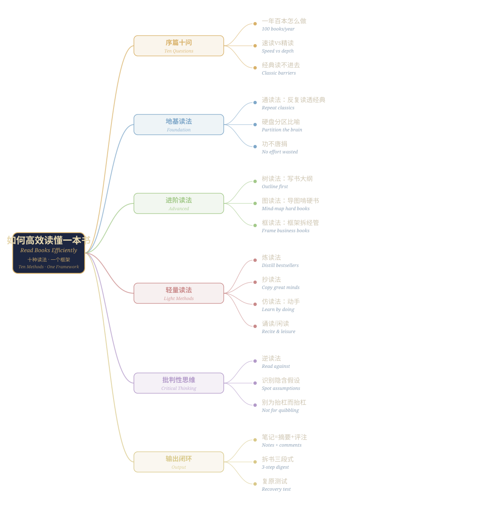

如何高效读懂一本书
〇 · 书籍信息
基本信息
| 书名 | 《如何高效读懂一本书》——不是速读教程，是「读什么、怎么读、读完怎么用」的完整流程 |
|---|---|
| 作者 | 秋叶：武汉工程大学副教授、网易云课堂「和秋叶一起学」系列课程创始人——一年读上百本书并把读法产品化的人 |
| 结构 | 序篇（时间/选书/误区十问）→ 十种读书法（通读/树读/图读/框读/炼读/逆读/抄读/仿读/诵读/闲读）→ 上篇拆书示范 → 下篇框架——方法论+案例双轨并行 |
| 体裁 | 实操手册：每种读法都配作者亲历案例——它的可信度来自作者自曝的失败：一年囫囵吞枣 500 本却毫无收获 |
| 一句话 | 书读得越多头脑越乱，是因为硬盘没分区——先建思考框架，再让书往框架里落位。 |
一 · 核心主题总览
十种读法背后站着四个母题：① 先分区再存文件
大脑如硬盘：「会读书，就要学会给硬盘建立索引」——没有思考框架的阅读，碎片进来激动一下，几天后被新碎片冲掉。通读法的目标不是记住内容，是长出框架。
② 写书的姿势读书
树读法（主题阅读）：先按「假如我要写这个领域的书」列大纲，再买十本书对照填充。「大部分人不是爱读书，是想走捷径」——主题阅读是把捷径拆掉，铺自己的路。
③ 批判性思维是底座
作者 36 岁才发现批判性思维这门学科，自购 40 余本 related 书苦练——逆读法的底气全来自它：没有批判性思维，逆读就成了抬杠。
④ 拆书即输出
读经管书用框读法、读畅销书用炼读法，然后写拆书稿：「■知识介绍 ■扩展思考 ■拆书建议」三段式——读完必须产出对读者有用的东西，否则等于没读。
二 · 第一段 序篇 · 十问与误区—— 一年百本 · 选书 · 速读与精读 ——
十问扫盲
序篇以自问自答扫清十类困惑：怎样一年读 100 多本？哪来时间？如何选书？速读还是精读？看不进去经典怎么办？核心立场：速读与精读不冲突——速读负责筛选与广度，精读负责框架与深度；「没有时间读完整本书，只看博客是不够的」——二手信息替代不了系统阅读。
◆ 语言学习 · 概念 · 起点
| 选书 | 读书流程的第一道闸：作者按「要解决的问题」选书，不按榜单 |
|---|---|
| 速读/精读 | 工具不是信仰：按书的类型与目的切换 |
| 开卷有益 | 被作者修正为「有目的的开卷才有益」 |
| 经典阅读障碍 | 看不懂经典多数是缺背景框架，不是智力问题 |
句型 ｜ 「你说自己一年读 100 多本书，怎样做到的？」——整本书以读者的十问开场：方法论写作的正确姿势是先接住问题再给答案。
500 本的教训
2002–2003 年作者一年囫囵吞枣近 500 本，多时一天十来本，收获却是：「似曾相识燕归来，但问你在哪本旧书里看到的，真不记得。」诊断：没有扎扎实实读几本书形成思考框架，书读得越多头脑越乱——「今天听这个人说有道理，明天听那个人说也有道理，到最后就是没有自己的道理」。
◆ 语言学习 · 教训 · 框架
| 思考框架 | 分析问题的固定结构：先有它，新知识才有落位 |
|---|---|
| 碎片知识 | 「看到了激动一下，过几天又被新的碎片冲掉」——无框架阅读的产物 |
| 定心锚 | 框架形成后读什么都有的「底」：吸收而非漂移 |
| 功不唐捐 | 作者对读书积累的总结：前期的功课永不白费 |
习语 ｜ 「似曾相识燕归来」——晏殊词被挪用形容阅读幻觉：见过观点却说不出出处，正是无框架阅读的典型症状。
三 · 第二段 十法 · 通读与树读—— 硬盘分区 · 写书大纲 · 一鱼多吃 ——
通读法与硬盘比喻
通读法的核心案例：2000 年为做软件实施，买齐领域全部书籍加 2000 多篇论文，全部精读总结，写出连载《水煮信息化》——从此「遇到领域问题就有知识框架去梳理，再吸收新东西就十分轻松」。硬盘比喻随后登场：「人的大脑好比是硬盘……很多人没有先给硬盘分区，直接把吸收来的东西一股脑儿丢进去，以为反正容量大，结果悲剧了」——甚至有 360G 硬盘只分两个区、信息全塞 4G 区的惨状。
◆ 语言学习 · 方法 · 通读
| 通读法 | 反复读透几本结构化的入门经典，建立领域框架——读法的地基 |
|---|---|
| 硬盘分区 | 大脑知识的分区索引：类比清奇但精确 |
| 体系化入门书 | 通读法选书标准：结构化、体系化、领域框架完整 |
| 从概念定义出发 | 作者总结的读透路径：先吃透基础概念再理解现象 |
句型 ｜ 「碎片知识的特点是看到了激动一下，过几天又被新的碎片冲掉了。」——海浪比喻：没有锚的知识，每一条都在冲刷上一条。
树读法：写书的姿势读书
主题阅读的实操版：先按写书目录列大纲（如《中国在线教育商业化模式探讨》），再大量买书——先读一本经典填充大纲，其余书「大部分内容相同的，跳过；看到不同的想法，思考、认同、整合，列入大纲」。三个月业余时间即可系统吃透一个领域——树读法的效率来自「以写带读」：输出压力倒逼结构化吸收。
◆ 语言学习 · 方法 · 树读
| 主题阅读 | 围绕一个领域读十本以上同类书——《如何阅读一本书》的最高层级 |
|---|---|
| 写书大纲 | 树读法的先手棋：假定自己要写这个领域的书 |
| 一鱼多吃 | 同一主题阅读产出多份成果：文章、课、书、咨询 |
| 专家视野 | 主题阅读的目标：先建立像专家一样的全局问题清单 |
句型 ｜ 「绝大部分请我推荐书的人似乎都认为在某个领域一定有一本最好的书。」——对速成心态的温和拆穿：「一本最好的书」是走捷径的幻觉，领域知识长在书的森林里。
四 · 第三段 十法 · 框读到闲读—— 八种武器的分工 ——
框读法与炼读法
读经管书用框读法：套用现成框架（如 SWOT、商业模式画布）拆解书中案例；读畅销书用炼读法：把感性内容提炼成理性框架——畅销书的观点往往是「金句+故事」，炼读就是还原背后的逻辑骨架。两者共同点：读的过程就是重构的过程，读完的标志是能用自己的框架复述。
◆ 语言学习 · 方法 · 武器库
| 框读法 | 带框架读经管书：边读边把案例填进分析框架 |
|---|---|
| 炼读法 | 把畅销书提炼成框架：观点→逻辑骨架→可复用模型 |
| 图读法 | 用思维导图啃硬书：把书的结构画出来 |
| 抄读法 | 遇到高出自己太多的书：老老实实摘录+感悟 |
句型 ｜ 「有的书作者高你太多，你就别装内行写书评了。」——抄读法的前提宣言：承认段位差是学习的诚实起点。
逆读法与三件套
读「传道书」（观点有名但有偏颇的书）用逆读法：列出书中错误或不适用的观点逐条反驳——作者对《金字塔原理》的逆读书评故意「不金字塔」，反而在豆瓣排名靠前。底座警告：没有批判性思维，逆读就是抬杠。读工具书用仿读法：「看一百遍不如动手学一遍」；读文艺书用诵读法（对比阅读出差距）；读快餐书用闲读法（放松即收益）。
◆ 语言学习 · 方法 · 武器库下
| 逆读法 | 故意反着读「传道书」：列错误清单逐条反驳 |
|---|---|
| 批判性思维 | 逆读的底座：识别隐含价值观、隐含假设、逻辑错误、论据可靠性 |
| 仿读法 | 工具书照着做：操作类知识只在动手里长出 |
| 诵读法/闲读法 | 文艺书读出声、快餐书纯放松——读法与书的类型必须匹配 |
习语 ｜ 「为了抬杠去抬杠，就不是学习心态了」——逆读法的红线；「看一百遍不如动手学一遍」——仿读法的全部理由。
五 · 第四段 输出 · 拆书与笔记—— 三段式 · 拆书稿 · 剧透 ——
读书笔记的写法
作者写读书笔记的方法论：摘要+评注的组合，重点不在抄，在「用自己的话把书的意思讲一遍，再判断哪里同意、哪里不同意、为什么」。笔记的检验标准：隔三个月回看，能否只靠笔记复原全书的论证链。
◆ 语言学习 · 方法 · 笔记
| 摘要+评注 | 笔记双件套：摘录后必附自己的判断 |
|---|---|
| 复原测试 | 笔记质量的自检：三个月后能否仅凭笔记还原全书 |
| 对比阅读 | 文艺书评的方法：两本书/两首诗并置，差距自显 |
| 书评写作 | 从背景交代到基本信息到扩展思考的完整链条 |
句型 ｜ 「适当写写自己的感受或者感悟，会更有互动感。」——摘抄的升级提示：书与读者之间必须发生化学反应，单纯摘录只是仓储。
拆书三段式
上篇的拆书示范统一用三段式：■知识介绍（书里说什么）→ ■扩展思考（结合现实推演）→ ■拆书建议（对读者可执行的动作）。以《免费：商业的未来》为例，作者指出免费模式的边界条件；以六度空间理论为例，指出传播链条的现实衰减。拆书的终点不是评论书，是生产「对读者有用」的增量——作者把「坚持拆书的目的是什么」单独成节：练就「把任何知识转化为大家看得懂的输出」的能力。
◆ 语言学习 · 方法 · 拆书
| 三段式 | 知识介绍/扩展思考/拆书建议——拆书稿的标准骨架 |
|---|---|
| 边界条件 | 拆书的关键产出：理论在什么前提下成立 |
| 增量 | 拆书的价值标尺：读者拿到书上没有的东西 |
| 以教代学 | 拆书本质：输出压力倒逼理解深度 |
习语 ｜ 「剧透」下我坚持拆书的目的——作者自嘲式标题：拆书动机说白了是把书读成自己的生产资料。
六 · 人物图鉴与成长弧线—— 主角配角 · 一张表看穿 ——
主要人物
秋叶——叙述者与样本：一年囫囵 500 本的失败者 → 十种读法的创立者——全书的人物弧线就是方法论本身：从贪心的胃到分区的硬盘
《水煮信息化》——2002 年主题阅读的产物：一次读完领域全部书+2000 篇论文——通读法与树读法的源头事件
《金字塔原理》——逆读法的靶子：「结论先行」被逐条反驳——对「神话方法论」的祛魅示范
批判性思维——36 岁才相遇的学科：40 余本书苦练三年——全书最晚习得也最底层的武器
次要人物（功能位）
| 《如何阅读一本书》 | 作者 2011 年系统学习的起点——十种读法的师承来源 |
|---|---|
| 《学会提问》 | 批判性思维指南：与《如何阅读一本书》并列为底座书单 |
| 《免费》 | 拆书示范对象：免费模式的边界被拆出——「为什么是错的」的样本 |
| 余秀华诗歌 | 诵读法/诗评方法的现挂案例——文艺阅读也要方法论，不能只靠感动 |
七 · 主题与象征—— 每个道具都在说话 ——
| 硬盘 ↔ 大脑 | 分区/索引/编码：知识管理的基础设施隐喻——没有分区的硬盘再大也是垃圾场 |
|---|---|
| 贪心的胃 ↔ 无框架阅读 | 什么都想尝 → 消化不良：作者对速读神话的病理诊断 |
| 大纲 ↔ 树读法 | 先写目录再读书：输出压力是最高效的吸收装置 |
| 三段式 ↔ 拆书 | 介绍/思考/建议：阅读的三次转化——理解、迁移、落地 |
| 燕归来 ↔ 阅读幻觉 | 似曾相识却不知出处：碎片知识的经典症状 |
八 · 写作手法赏析—— 怎么写，就能怎么学 ——
① 自曝失败
用 500 本的失败开篇：方法论的可信度来自作者的病历，不是人设
② 命名学
通读/树读/图读/框读/炼读/逆读/抄读/仿读/诵读/闲读——十个动词化的名字，让读法可传播、可点菜
③ 问答开场
序篇以真实读者十问开头：问题即目录，痛点即索引
④ 案例三段式
每篇拆书示范结构完全一致：格式统一是可复制性的前提——读者看完就能套用
九 · 名段欣赏—— 原文精读 · 逐段赏析 ——
十 · 金句摘录—— 14 条 · 中英对照 · 带出处 ——
"如果一个人一开始没有扎扎实实读几本书形成思考框架，书读得越多头脑越乱。"—— 通读法
"今天听这个人说有道理，明天听那个人说也有道理，到最后就是没有自己的道理。"—— 通读法
"人的大脑好比是硬盘……会读书，就要学会给硬盘建立索引。"—— 通读法
"碎片知识的特点是看到了激动一下，过几天又被新的碎片冲掉了。"—— 通读法
"绝大部分请我推荐书的人似乎都认为在某个领域一定有一本最好的书。"—— 树读法
"先看一本经典的，对照我的大纲，梳理充实完成后，开始读其他的图书。"—— 树读法
"要成为一个领域的专家，我就必须先建立像专家一样的视野和格局来思考整个领域。"—— 树读法
"发达国家的高中就需要普及的批判性思维训练，我到30多岁大脑依然一片空白。"—— 通读法
"没有这些积累，就容易变成为了抬杠去抬杠，就不是学习心态了。"—— 逆读法
"有的书作者高你太多，你就别装内行写书评了。"—— 抄读法
"看一百遍不如动手学一遍。"—— 仿读法
"要读懂好诗真的是需要生活阅历支撑的。"—— 诵读法
"一个人晚年幸福才是真正的幸福。"—— 刘彦斌推荐序（引）
"用一个词总结——功不唐捐。"—— 通读法
十一 · 拓展阅读—— 原文 · 词条 · 译文 ——
十二 · 个人感悟与心得—— 三点心得 ——
三点感悟
① 读书的瓶颈在框架
全书最值钱的一句诊断：「书读得越多头脑越乱」不是勤奋问题，是基础设施问题——硬盘不分区，文件越多越乱。任何「读了很多书却没变化」的人，都该先检查框架再检查勤奋。
② 十种读法是一张菜单
十种读法的价值不在记忆，在匹配：书分类型，读法分武器——用逆读法读经典是浪费，用通读法读快餐是奢侈。先判类型，再选武器。
③ 输出是完成态
拆书三段式把「读过/读懂/可用」显式分级：阅读的终点不是最后一页，是产出的那份增量——笔记、书评、课程、文章都算，唯一不算的是「感觉自己学到了」。
这本书可以压缩成一句话：先给大脑分区，再让书流进来——顺序反了，读多少都是碎片。
十三 · 一页速查（复习用）
| 通读法 | 反复读透几本体系化入门经典，长出思考框架——一切读法的地基 |
|---|---|
| 树读法 | 写书的姿势读书：先列大纲，十本书对照填充，三个月吃透一个领域 |
| 十法菜单 | 通/树/图/框/炼/逆/抄/仿/诵/闲——按书型点菜，不硬套 |
| 批判性思维 | 逆读的底座：识别假设、价值观、逻辑与论据——否则只是抬杠 |
| 拆书三段式 | 知识介绍 → 扩展思考 → 拆书建议：读完必须产出增量 |
十四 · 全书思维导图—— 一图纵览 ——

一图纵览全书骨架 · 中英双语对照 · 手机端可左右滑动查看全图